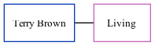

Terry A Brown
[ Home ] | [ Calendar ] | [ Surnames Index ] | [ Family History ]Terry Brown, the husband of Helen J Willett (the second cousin on the father's side of Nigel Horne), and married Helen in Thanet, Kent, England around Feb 19671.
Citations
- England & Wales Marriages 1837-2005 - Findmypast
Media
England & Wales marriages 1837-2005 - BMD/M/1967/1/AZ/000170/149
Family Tree
Generated by ged2site. Last updated on Nov 13, 2024